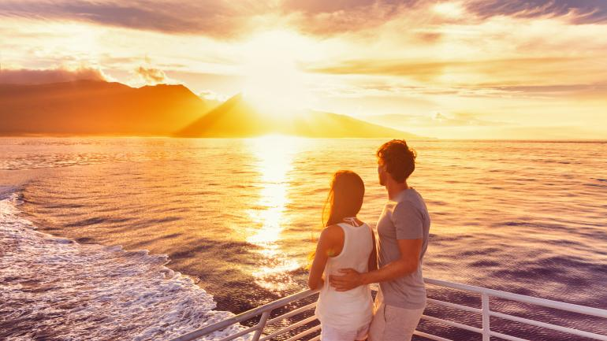

장엄한 나이아가라 폭포
황홀한 경관을 자랑하는 뉴욕주 나이아가라 폭포는 방문할 만한 가치가 있습니다. 낭만적인 숙소를 찾고, 멋진 폭포 전경을 바라보며 식사를 하고, 다채로운 조명이 빛을 발하는 야경을 감상해 보세요. 돈을 마음껏 써서 나이아가라 월풀(Whirlpool Rapids)과 아메리칸 폴스(American Falls)의 헬리콥터 투어를 즐기고, 나이아가라 협곡(Niagara Gorge)으로 내려가서 허리케인 데크(Hurricane Deck)에서 폭포의 거대함을 느껴 보세요. 하루는 핑거 레이크스(Finger Lakes) 와인 생산지의 그림처럼 아름답고 매력적인 풍광 속으로 뛰어드세요.
나이아가라 폭포 주립공원에서 메이드 오브 더 미스트 보트 투어로 폭포를 가까이서 보기

열대섬 마우이로 떠나다
하와이 제도에서 두 번째로 큰 섬인 마우이가 열대 기후, 해변의 고운 모래사장, 푸른 나뭇잎, 궁전 같은 리조트로 신혼부부를 유혹합니다. 지프차를 타고 돌아다니며 숨은 만이나 폭포를 발견하고, 할레아칼라 국립공원(Haleakala National Park)에서 하이킹을 하고, 농장 체험을 통해 신선한 파인애플과 다른 열대과일을 맛보세요. 저녁에는 하와이 토속 음식을 즐기고, 하와이 전통 향연 루아우(luau)에서 훌라(hula) 공연을 감상해보세요.
마우이 앞바다에서 크루즈 도중 일몰을 바라보는 커플
